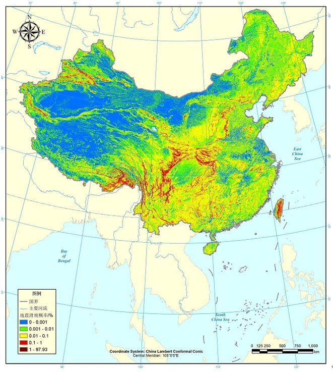
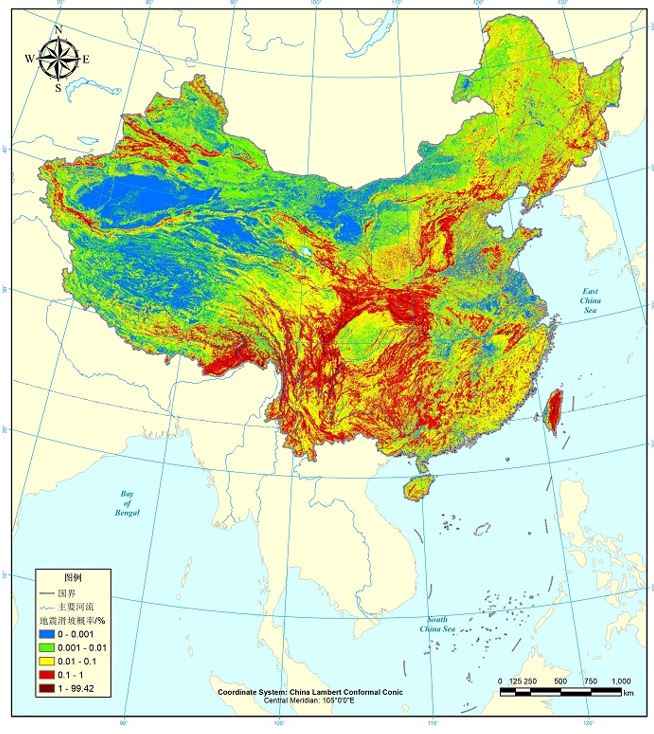
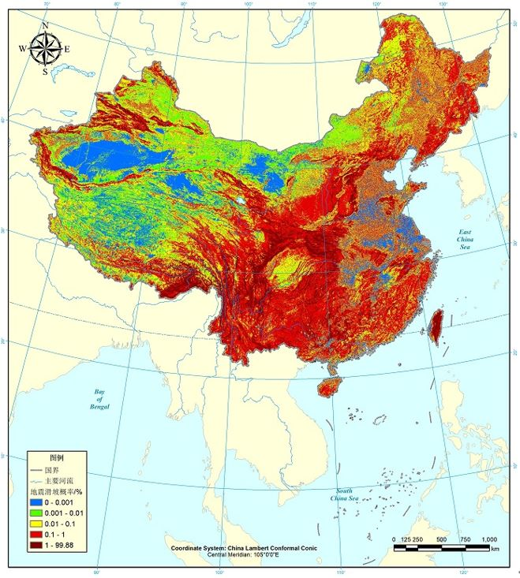

全国地震崩滑概率危险性分析产品
Probability Hazard Analysis Products for Seismic Landslides across China
应急管理部国家自然灾害防治研究院地质灾害研究中心许冲研究员团队利用资助研发的基于大数据和机器学习的地震崩滑概率危险性分析技术（Probabilistic Seismic Landslide Hazard Analysis），构建了地震崩滑真实概率第一代模型，可计算各种地形、地质、水文等因子组合下经历任何地震动下的崩滑真实概率，为解决重特大地震崩滑灾害链灾情难以预估，信息获取缓慢，灾情评估误差大，决策支持不到位等问题提供了一个切实有效的科学方案。
数据介绍
为便利同行使用，发布十组原始数据，分别为我国经历0.1g、0.2g、0.3g、0.4g、0.5g、0.6g、0.7g、0.8g、0.9g、1.0g地震动峰值加速度条件下的崩滑发生真实概率（详见数据示例图）。结合重特大地震的地震动峰值加速度分布预测结果，震区人口、道路与房屋分布等数据，可在亚分钟时间内快速计算出同震崩滑真实概率空间分布，以及地震崩滑直接导致的人员伤亡、公路阻断与房屋压埋等空间分布。
原始数据供科学研究使用，联系人：chongxu@ninhm.ac.cn
引用方式（包括模型和相关基础数据）：
模型：
[1]许冲, 徐锡伟, 周本刚, 沈玲玲 (2019) 同震滑坡发生概率研究——新一代地震滑坡危险性模型. 工程地质学报, 27(5): 1121-1129.
[2]许冲 (2020) 第一代中国地震滑坡概率分布图勘误. 工程地质学报, 28(5): 1066-1068.
基础数据：
[1]Xu C, Xu X, Yao X, Dai F (2014) Three (nearly) complete inventories of landslides triggered by the May 12, 2008 Wenchuan Mw 7.9 earthquake of China and their spatial distribution statistical analysis. Landslides, 11(3): 441-461.
[2]Xu C, Xu X, Yu G (2013) Landslides triggered by slipping-fault-generated earthquake on a plateau: an example of the 14 April 2010, Ms 7.1, Yushu, China earthquake. Landslides, 10(4): 421-431.
[3]Xu C, Xu X, Shyu JBH (2015) Database and spatial distribution of landslides triggered by the Lushan, China Mw 6.6 earthquake of 20 April 2013. Geomorphology, 248: 77-92.
[4]Xu C, Xu X, Shyu JBH, Gao M, Tan X, Ran Y, Zheng W (2015) Landslides triggered by the 20 April 2013 Lushan, China, Mw 6.6 earthquake from field investigations and preliminary analyses. Landslides, 12(2): 365-385.
[5]Xu C, Xu X, Shyu JBH, Zheng W, Min W (2014) Landslides triggered by the 22 July 2013 Minxian-Zhangxian, China, Mw 5.9 earthquake: Inventory compiling and spatial distribution analysis. Journal of Asian Earth Sciences, 92: 125-142.
[1]许冲, 徐锡伟, 周本刚, 沈玲玲 (2019) 同震滑坡发生概率研究——新一代地震滑坡危险性模型. 工程地质学报, 27(5): 1121-1129.
[2]许冲 (2020) 第一代中国地震滑坡概率分布图勘误. 工程地质学报, 28(5): 1066-1068.
基础数据：
[1]Xu C, Xu X, Yao X, Dai F (2014) Three (nearly) complete inventories of landslides triggered by the May 12, 2008 Wenchuan Mw 7.9 earthquake of China and their spatial distribution statistical analysis. Landslides, 11(3): 441-461.
[2]Xu C, Xu X, Yu G (2013) Landslides triggered by slipping-fault-generated earthquake on a plateau: an example of the 14 April 2010, Ms 7.1, Yushu, China earthquake. Landslides, 10(4): 421-431.
[3]Xu C, Xu X, Shyu JBH (2015) Database and spatial distribution of landslides triggered by the Lushan, China Mw 6.6 earthquake of 20 April 2013. Geomorphology, 248: 77-92.
[4]Xu C, Xu X, Shyu JBH, Gao M, Tan X, Ran Y, Zheng W (2015) Landslides triggered by the 20 April 2013 Lushan, China, Mw 6.6 earthquake from field investigations and preliminary analyses. Landslides, 12(2): 365-385.
[5]Xu C, Xu X, Shyu JBH, Zheng W, Min W (2014) Landslides triggered by the 22 July 2013 Minxian-Zhangxian, China, Mw 5.9 earthquake: Inventory compiling and spatial distribution analysis. Journal of Asian Earth Sciences, 92: 125-142.
数据属性
空间范围：全国
空间分辨率：1 km
时间范围：-
时间分辨率：-
数据类型：GeoTIFF
投影坐标：GCS WGS 84
数据预览
经历0.1g假设峰值加速度下崩滑概率
经历0.5g假设峰值加速度下崩滑概率
经历1.0g假设峰值加速度下崩滑概率
数据下载
数据获取方式
复合链生自然灾害动力学 分享地震、地质、水旱、气象等自然灾害及其复合链生灾害相关科技与科普信息与成果，助力自然灾害防灾减灾和应急管理科技与科普工作。欢迎关注和供稿(401784656@gg.com)。 | 微信搜索或扫码关注公众号“复合链生自然灾害动力学”， 回复“地震崩滑全国产品20230621”获取下载链接 |
建议使用Google浏览器，IE内核浏览器可能不正常显示下载按钮等！
Fighting, GISer!
最新博文